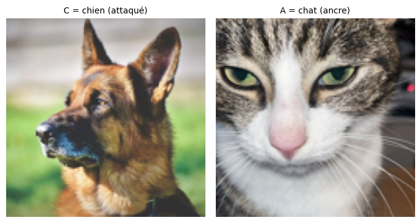
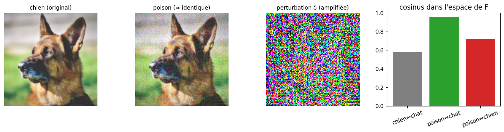
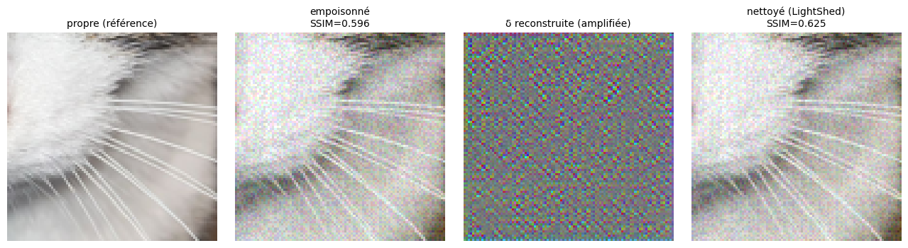

Nightshade & LightShed
Text-to-Image Model Poisoning and Unpoisoning, Minimal Implementation
Download
Research report from my mini research internship at the Applied Artificial Intelligence Laboratory, Penn State University (August–December 2025).
Principle
- Nightshade (Shan et al., IEEE S&P 2024) is the attack method. It performs prompt-specific poisoning of text-to-image models. Starting from an image representing a target concept C, an imperceptible perturbation \delta is added, pushing its features toward those of a reference image representing another concept A.
- LightShed (Foerster et al., USENIX Security 2025) trains an autoencoder to reconstruct the injected perturbation \delta. Its entropy is used as a detection signal, and \delta is then subtracted to recover the clean image.

Nightshade
The core of the method (Equations 1–2 in the paper):
\min_{\delta}\ \big\lVert F(x_t+\delta)-F(x^{a})\big\rVert_2^2 \quad \text{s.c.}\ \lVert\delta\rVert \le p
where F is the feature extractor, x_t is the image of the target (attacked) concept, x^a is the anchor image and p is the perceptual budget under which the perturbation remains imperceptible to a human eye.
Here F plays the role of the Stable Diffusion VAE encoder: regardless of its exact nature, the attack aims to align the features of the poisoned image with those of the anchor while keeping the image visually unchanged.

he poisoned image remains visually a dog, but its features have migrated toward the cat. When injected in sufficient quantity during the training of a text-to-image model, the association “dog” / dog features is overwritten : the model begins to generate cats in response to the prompt “dog”
LightShed
A key assumption of the paper is that the attacker has access to the defense tool and can therefore construct (clean image, poisoned image) pairs to train a detector on the fingerprint of \delta.
The pipeline is as follows:
- Entropy-based detection: an autoencoder is trained to reconstruct \delta from a suspicious image. On clean images, it reconstructs almost nothing, whereas on poisoned images it successfully recovers the perturbation’s fingerprint. The entropy of this reconstruction clearly separates the two classes (TPR/TNR ≈ 1 on my small dataset).
- Denoising by subtraction: clean image ≈ poisoned image − reconstructed \delta.
